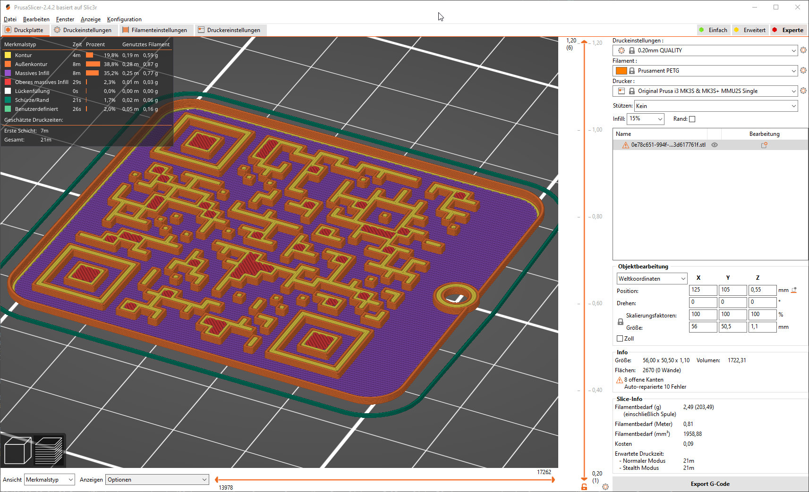

Getting started
Find your filament
Goto Producers and select your producer, material and the filament by name. At the moment we don’t offer different colors. Maybe we will extend the filament selection sometimes by a color palette.
Each filament can be accesed by a shorter link, this link is used for QR-Code generation.
When you miss one of your producers or materials or filaments, see the contribute page for more information.
Download .stl
When you have downloaded the .stl file.
Slice the .stl to .gcode (e.g. with PrusaSlicer)

The print will usally take 20 min
It’s total dimensions are 56.0 x 50.5 x 1.1 mm
Filament used: 2.5 g
Hold the print against a light source and scan the QR-Code with your smartphone
You will be redirected to the filament overview on Open-Filament